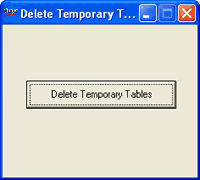

Shoper 9 creates many temporary tables which forms the intermediary information required for generating any report. If the report generation gets aborted due to any reasons, the subsequent invocation of the report may contain wrong information. Hence, use this option to delete temporary tables.
How to reach: Housekeeping > Delete Temporary Tables
The Delete Temporary Table window is displayed as shown.

Delete Temporary Tables: Click to delete temporary tables. A relevant message is displayed on completion.